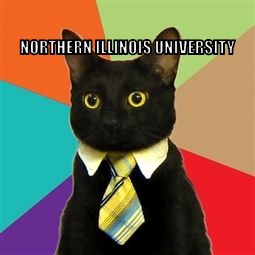
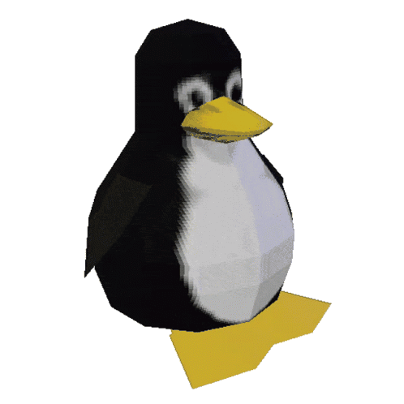
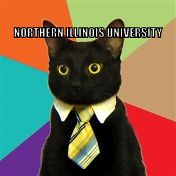
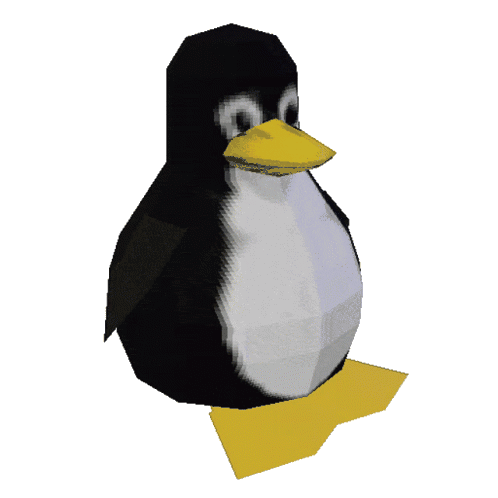

Juan Lopez
2nd year NIU computer science student
Check out my LinkedIn! 
and my Github! 
  
 
ABOUT ME
I am a student at Northern Illinois University passionate in CS.
I enjoy learning the ins and outs of C++, Unix systems, and Web programming.
However, being into CS doesn't limit me to just technology. Alongside stereotypical interests
such as gaming, computers, sleeping in bed, media, and Discord. I also enjoy
music! I enjoy learning instruments, listening to live music, and being involved in local diy scenes! I
am very
invested in my community and often discuss with others on how to improve our community.
I aspire to be a software developer! where? I don't know yet!
COURSEWORK
- CSCI 240 Intro to Programming in C++
In this class we focused on basic programming concepts like output, decisions, loops, functions, arrays, text manipulation, files, and OOP
- CSCI 241 Intermediate C++
In this class I am learning design and implementation of data structures applied to large-scale projects. Including static and dynamic implementation of linear and nonlinear data structures, recursion, searching and sorting algorithms, and algorithmic complexity analysis.
- CSCI 330 UNIX & Network Programming
In this class I am learning UNIX system usage and commands. Shell script programming, Network programming concepts and protocols, System call level and basic network programming in C++.
CONTACT ME
-
jlopezcs04@gmail.com
MEMBERSHIPS